Kasten
Een kast op maat benut elke centimeter, ook de lastige hoeken en schuine wanden. We ontwerpen mee en bouwen af, zodat u geen concessies doet aan opbergruimte of uitstraling.
Keukens en kasten op maat, uit Zwolle
Schuin dak, rare hoek of krappe ruimte? Wij ontwerpen, bouwen en plaatsen uw keuken of kast zelf, vanuit onze eigen werkplaats in Zwolle.
5 sterren op Google, uit 4 reviews
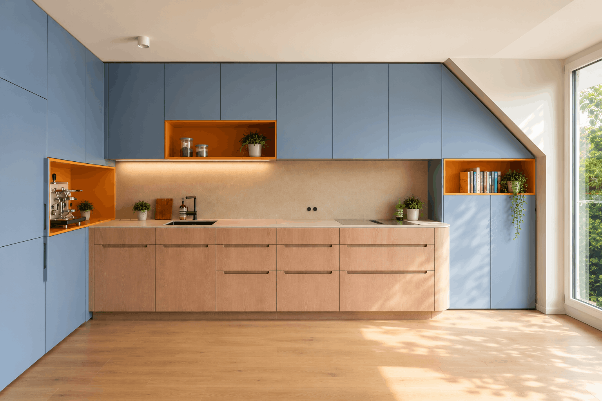
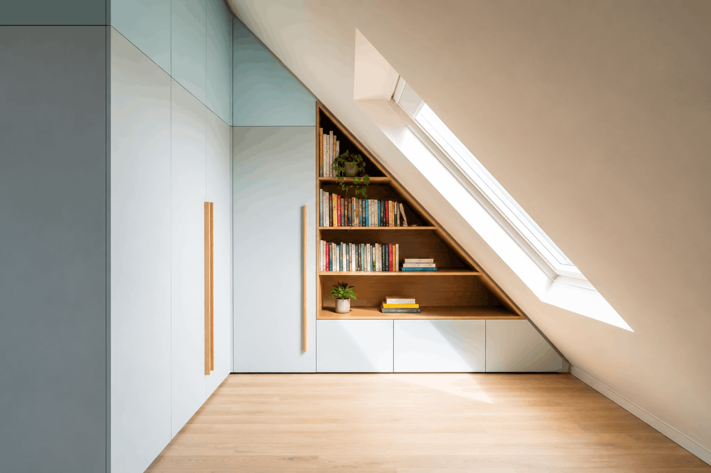
Schuine wanden, beperkte afmetingen of specifieke wensen? Wij ontwerpen maatwerk dat elke centimeter benut.
"Samen met hopinterieurs deze prachtige keuken helemaal op maat laten maken.
Alle normale keuken verkopers konden niks met ons schuine dak maar bij HOP! Interieur bouw hebben ze dit perfect opgelost.
Nogmaals bedankt voor de gave keuken!"
Geen vaste kastmaten en geen beperkte materiaalkeuze. De indeling, de afmetingen, het materiaal, de kleur en de afwerking stemmen we af op hoe u kookt, woont en leeft.
We werken met houtsoorten, laminaten en afwerkingen die jarenlang mooi blijven, en helpen u kiezen wat past bij uw gebruik en smaak.
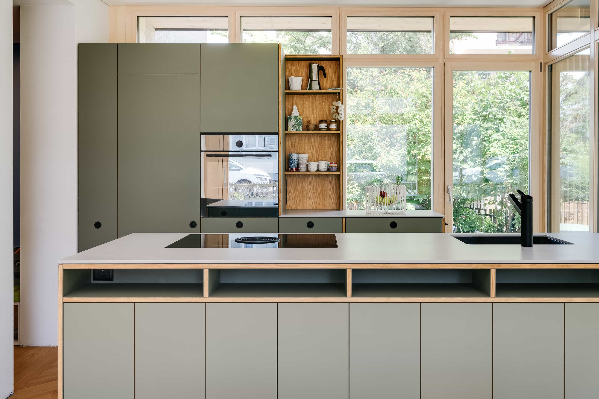
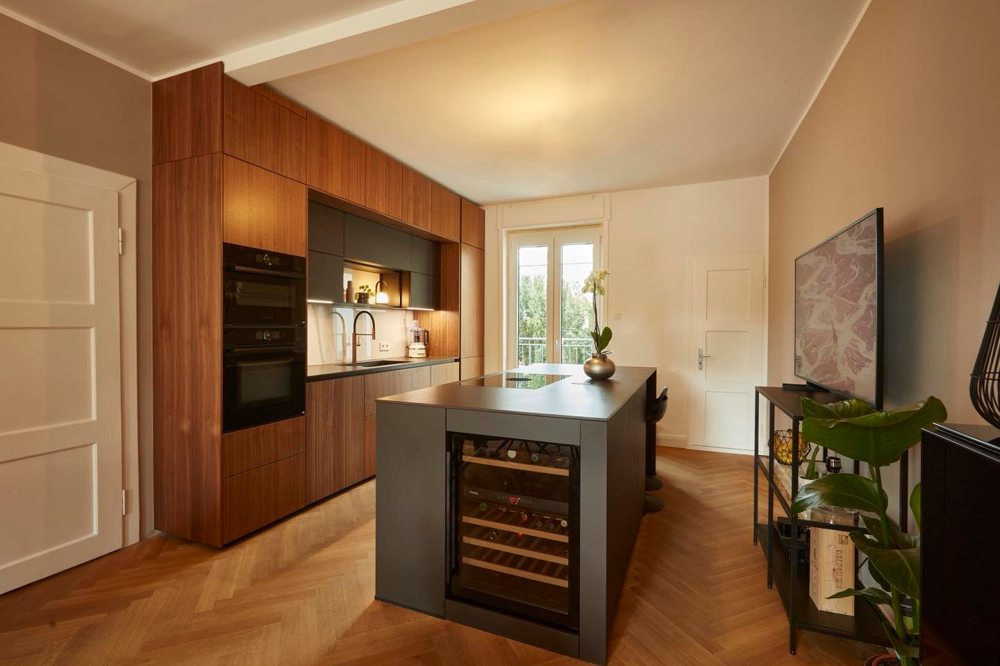
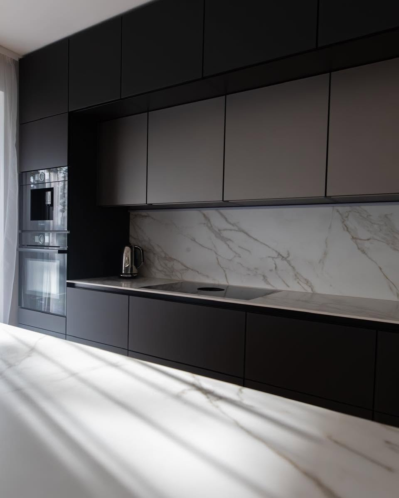
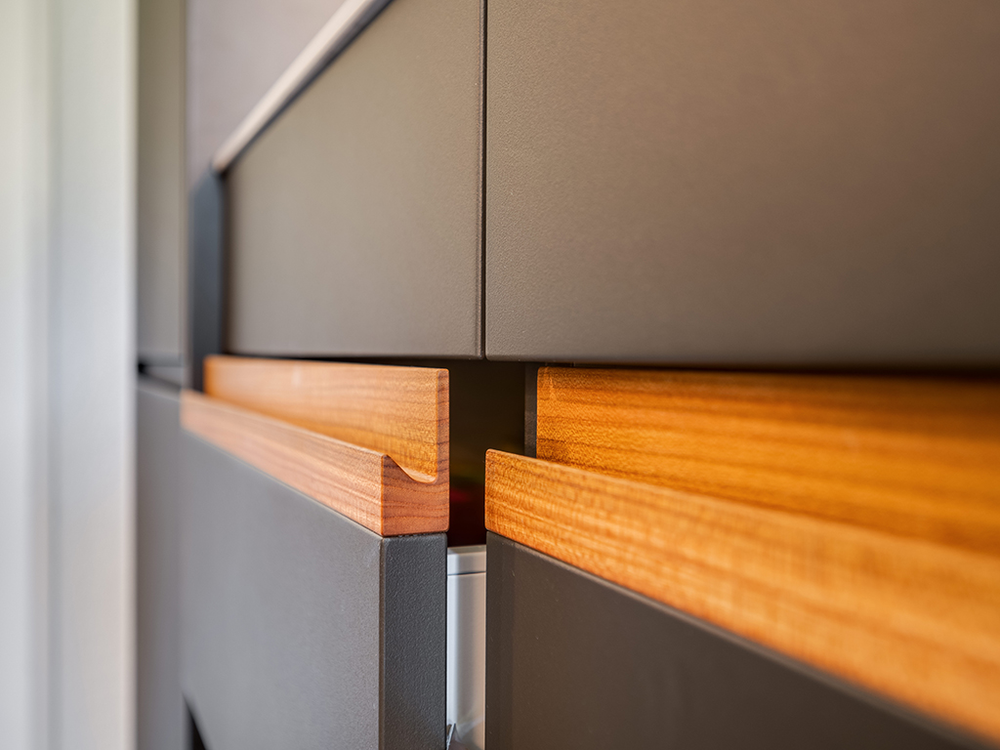
"Super mooie keuken en bijkeuken laten plaatsen in ons nieuwbouw huis. Wij zijn er helemaal blij mee.
Wij vonden het fijn dat alles mooi lokaal gemaakt word."
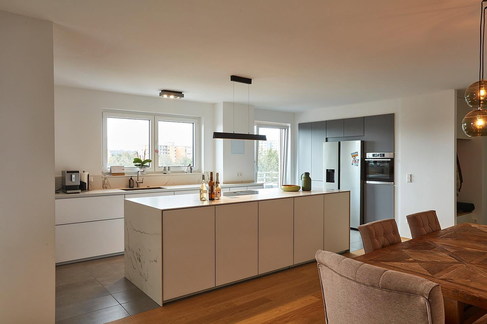
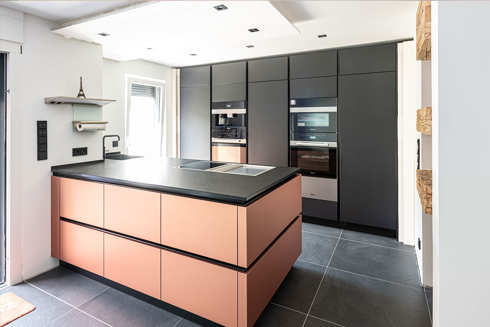
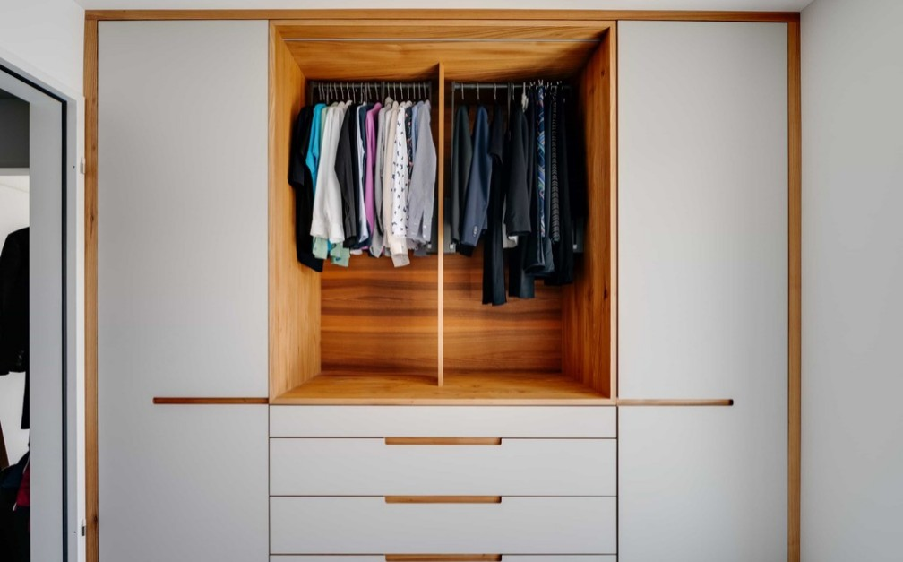
Een kast op maat benut elke centimeter, ook de lastige hoeken en schuine wanden. We ontwerpen mee en bouwen af, zodat u geen concessies doet aan opbergruimte of uitstraling.
Een complete woonkamer, een badkamerkast of een tv-meubel op maat. Voor iedereen die meer wil dan een standaardoplossing, afgestemd op uw woning.
Kantoren en winkels. Een goed zakelijk interieur versterkt uw merk en geeft klanten en medewerkers een prettige plek.
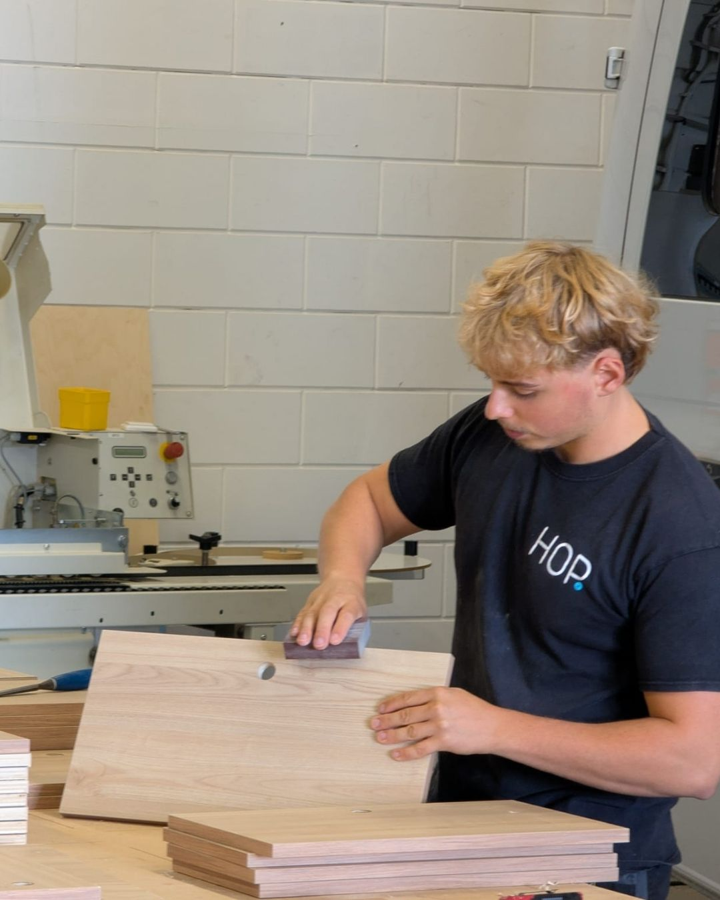
Bij HOP! krijgt u de mensen aan de lijn die uw keuken maken. Geen tussenpersonen, geen wisselende gezichten en geen ingehuurde krachten.
HOP! is ontstaan uit passie voor perfect maatwerk en 10 jaar ervaring in de high-end camperbouw.
Moderne CNC-machines maken elk onderdeel millimeternauwkeurig. Daarna werken onze vakmensen het met de hand af.
Van ontwerp tot oplevering gebeurt alles bij ons. Geen uitbesteding, dus wij houden de kwaliteit zelf in de hand.
We werken samen met lokale leveranciers en bedrijven in de regio Zwolle. Dat houdt de lijnen kort.
"Het team van HOP! heeft voor ons een super keuken gebouwd. Vanaf de eerste tekening tot de productie zijn we heel goed geholpen.
Het leukste vind ik dat alles in Zwolle gemaakt word. Zo hebben we een echte maatwerk keuken gekregen die helemaal bij ons past..."
U weet bij elke stap waar u aan toe bent. Voor een kast op maat gaat het op dezelfde manier.
U komt langs in Zwolle. We bespreken uw wensen, u bekijkt materialen en afwerkingen, en u krijgt een eerlijk beeld van wat kan binnen uw budget.
Op basis van het gesprek maken we een volledig 3D-ontwerp. U ziet precies hoe het eruitziet voordat er iets geproduceerd wordt. Aanpassen is nu nog eenvoudig.
U krijgt een heldere, gedetailleerde offerte zonder verborgen kosten. Na uw akkoord plannen we de productie en krijgt u een concrete opleverdatum.
Elke centimeter telt. We meten ter plaatse op en noteren alle details van de ruimte.
Uw keuken wordt volledig in ons atelier in Zwolle gemaakt. Geen uitbesteding, geen tussenschakels.
Ons team plaatst alles zorgvuldig. Daarna lopen we het samen met u na, zodat u tevreden bent voordat wij vertrekken.
Vertel wat u voor ogen heeft, dan plannen we een kennismaking in de studio.
Bel 038 206 0040Maandag tot en met vrijdag
8:30 tot 17:00
Zaterdag en zondag gesloten
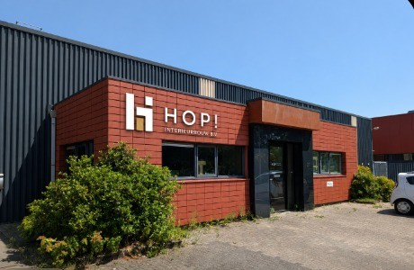
Voltastraat 27
8013 PM Zwolle
Bezoek op afspraak mogelijk.